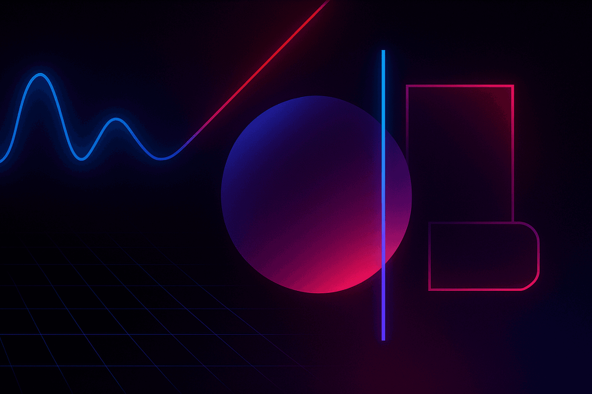
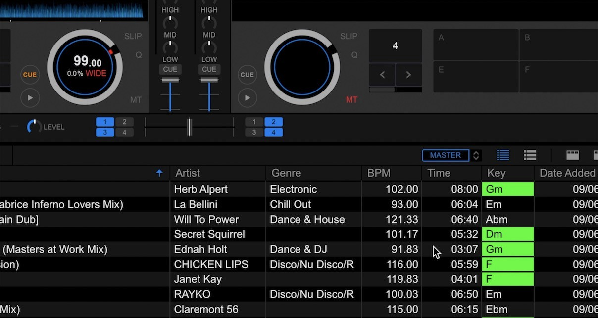
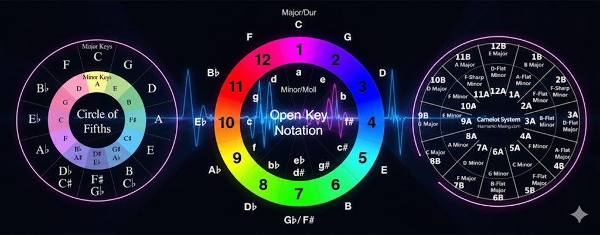
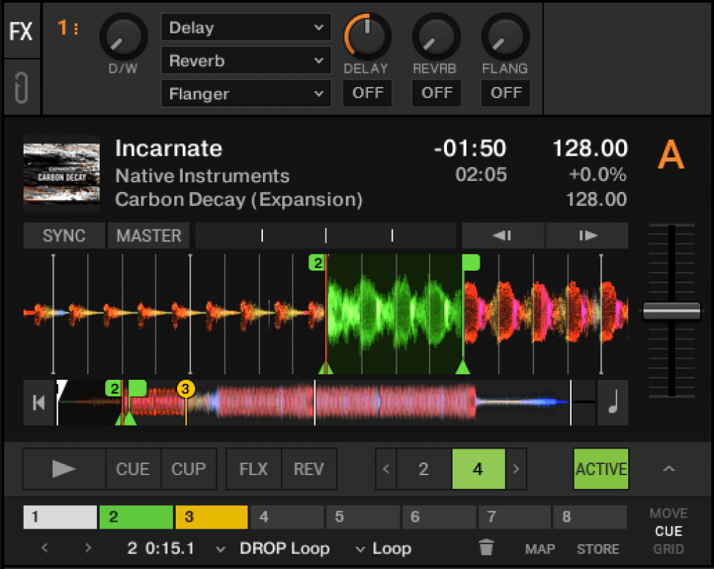

Planning a DJ set is the invisible art form that separates a generic playlist from a musical journey that defines the night and keeps the dancefloor moving. In this guide, I'll give you all the set DJ set planning tips and techniques I've learned through my DJ journey spanning over half my life!
What You’ll Learn About Planning DJ Mixes
- How to organize your library and use sub-crates to manage energy levels effectively.
- The importance of harmonic mixing and using the Camelot system to match the same number.
- How to balance preparation with the spontaneity required to read a crowd and keep people dancing.
- How PulseDJ helps you identify creative next tracks when you need to pivot from your original plan.
Introduction to PulseDJ
This is where PulseDJ transforms your workflow. PulseDJ is an AI co-pilot for DJs that runs alongside your existing software, whether you use Serato, Rekordbox, VirtualDJ, Traktor, or djay PRO. It is designed to help you stay fresh and never black out during a set.
How PulseDJ Enhances Your Planning
Even the most prepared DJ hits a wall. You might play a track and suddenly realize your planned next track doesn't fit the current vibe. PulseDJ analyzes the tracks you play in real-time and recommends creative next tracks based on historic track usage from other DJs, key, BPM, and more.
It works by reading the history files your DJ software creates. It doesn't interfere with your audio or cause crashes because it runs as a separate application. This means you get intelligent suggestions without risking your performance stability.
Key PulseDJ Features for DJ Set Planning

- Harmonic Matching: PulseDJ highlights compatible tracks in green, making it instantly obvious which songs will mix harmonically with your current track. This saves you from mentally calculating the Camelot wheel in a high-pressure moment.
- The PulseDJ HOT 100: If you need a guaranteed crowd-pleaser, you can access the Hot 100 charts to see which songs are most popular on dancefloors right now, filtered by genre or country. This helps you choose tracks that are proven winners.
- MyStyle: The more you use it, the smarter it gets. The "MyStyle" feature analyzes your specific history to give you personalized recommendations that fit your unique sound.
By using PulseDJ, you effectively have a second pair of eyes on your library, suggesting connections between songs you might have missed or certain tracks you forgot you even had.

The Philosophy of DJ Set Preparation

Many DJs ask me, "How much should I actually plan?" It is the age-old debate between the "pre-recorded" perfectionist and the freestyle artist. In my experience, the art of djing lies somewhere in the middle. You never want to sound like a jukebox, but walking into a peak time slot with zero preparation is a recipe for disaster.
There are many factors involved in a successful performance, from the venue acoustics to the crowd's mood. To navigate this, you need to know your music library inside and out. Whether you are playing vinyl or using modern dj software, the principle remains the same: preparation buys you the mental freedom to be creative in the moment. It makes sense to have a roadmap, even if you decide to take a detour halfway through.
Know Your Venue and Time Slot
Before you even select tracks, you need context. Are you playing the warm-up set at a lounge, or are you headlining a warehouse rave? The time slot dictates the energy.
If you are opening, your job is to set the mood, not burn the place down with big drops within the first ten minutes. You want to play tracks that get people nodding their heads, grabbing a drink, and inching toward the floor. Conversely, if you are on at 1:00 AM, the energy level needs to be high, and you need to sustain it.
I always look at the lineup. If the DJ before me plays hard techno, and the DJ after me plays deep house, I need to bridge that gap. A professional dj knows how to transition not just between two songs, but between the vibes of the night.
Intelligent Library Management
You cannot plan a set if your files are a mess. Organization is the foundation of a great set list.
Using Sub Crates
Don't just dump everything into one massive folder. I break my library down into specific genres, and then further into "sub-crates" based on different energy levels. For example, I might have a crate for "House - Warm Up," "House - Peak," and "House - Classics." This allows me to grab a new track that fits the vibe instantly without scrolling endlessly.
Analyzing Your Files

Modern software is incredible at analyzing the tempo (BPM) and key of your music. Make sure your beatgrids are accurate. If the software analyzes a track incorrectly, your loops and sync features will drift. Spend time prepping your new tracks immediately after downloading them so your dj skills aren't wasted on technical troubleshooting during the gig.
The Art of Track Selection
Track selection is arguably more important than technical mixing skills. You can have perfect beat-matching, but if you play the wrong song, you lose the floor.
Digging for Gold
Don't just play the current Top 10. Dig deeper. Look for a particular track that no one else is playing. Scour a specific record label you love, check out YouTube videos of underground sets, or browse the back catalogs of your favorite artists. Finding that one song that surprises the audience is what makes a set memorable.
The "Three-Track" Rule
When I plan a set, I don't script every single minute. Instead, I think in "mini-mixes" of three tracks. I look for a few tracks that work perfectly together - perhaps they share a vocal sample, a similar drum pattern, or complementary keys. These little modules give me safety nets. If I play track A, I know track B and C will follow perfectly. This way, I only have to think about the next mix every 15 minutes, giving me time to relax and read the room.
Harmonic Mixing and the Camelot System

If you want your mix to sound professional, you need to understand harmonic mixing. This involves mixing tracks that are in the same key or a compatible key.
Most DJs use the Camelot system (e.g., 8A, 5B). It simplifies music theory into a clock face. If you are playing a track in 8A, you can mix into a track with the same number (8A or 8B) or adjacent numbers (7A, 9A) and it will sound musically consonant.
When you mix two tracks that clash in key, it creates dissonance. It sounds "muddy" or "wrong," even if the beats are matched perfectly. Harmonically compatible mixes allow for long, smooth blends where the melodies weave together to create something new.
Managing Energy Levels

A common mistake is staying at one energy level for too long. If you play high-octane bangers for an hour straight, the crowd gets exhausted. You need to create peaks and valleys.
Think of your set as a wave. You build up to a big hit, let the crowd go crazy, and then maybe bring it down slightly with a deeper, more groovy track to let them breathe before building it up again. This dynamic range keeps the listener engaged.
Set Phase
Recommended BPM Range
Energy Level
Track Type
Warm-Up
115 - 122 BPM
Low to Mid
Deep cuts, instrumentals, familiar remixes.
Build-Up
122 - 126 BPM
Mid to High
Groovy basslines, recognizable vocals.
Peak Time
126 - 132+ BPM
Big drops, anthems, high-energy drivers.
Cool Down
Variable
Classics, emotionally resonant songs.
Technical Preparation: Hot Cues and Loops

Once you have your specific genres and playlists sorted, get technical.
Hot Cues are markers you place on a digital track. I always set cues at:
- The very start (First beat).
- Where the bassline kicks in.
- The breakdown.
- A mix-out point (where the track starts to fade or simplify).
Having these cues set means you can jump to the best part of a track instantly. If you realize the crowd is getting bored, you can load a new track and jump straight to the drop using a hot cue, skipping the long intro.
The Mix: Incoming and Outgoing
When you are actually mixing, listen closely to your monitor. You are managing two main elements: the outgoing track (what the audience hears) and the incoming track (what you are cueing up).
The goal is to swap the basslines. Generally, you don't want two kick drums fighting for the low frequencies at full volume. As you bring the volume of the incoming track up, you should be slightly lowering the bass of the outgoing track. This keeps the sound system clean.
You only have a few seconds to decide if a mix is working. If you hear the snare drums clashing (flamming) in your headphones, fix it before you bring the fader up. Trust your ears-they are your most important tool.
Reading the Crowd vs. The Plan
You have your set list. You have your great music. You have your hot cues. Now, be prepared to throw it all away.
The dancefloor is a living organism. Sometimes, you play a big hit and the crowd barely reacts. Other times, you play a random B-side and people go crazy. A great dj observes these reactions and adapts.
If you see people leaving the dance floor to get drinks, you might be playing too hard or too obscure. This is where having access to other music and different genres is vital. Don't be afraid to pivot. If Techno isn't working, try a Tech House track with a funkier groove.
This implies you need a massive music library, but more importantly, you need a way to navigate it quickly. You don't want to be staring at your laptop screen searching for "that one track" while the current song runs out.
Using Technology to Assist Your Flow
We live in a golden age of dj equipment. We have access to tools that help us make better decisions in real-time. This doesn't mean letting the computer do the work for you; it means using data to enhance your creativity.
We have access to key detection, waveform displays, and vast libraries. Utilizing these tools allows us to focus on the creative side - the EQing, the FX, and the interaction with the crowd - rather than just beat-matching.
Final Thoughts On Planning DJ Sets
Planning a DJ set is about balancing structure with flexibility. You need the technical discipline to organize your favorite tracks, set your hot cues, and understand harmonic keys. But you also need the artistic intuition to read the room and change direction when necessary.
The secret to great mixes happens when you are confident in your tools and your library. Whether you are blending two tracks or layering four, the goal is always the same: to create a unified experience for the listener. Don't be afraid to rely on new technology to help you dig through your collection. The more tracks you have at your fingertips - and the faster you can find the right one - the better your set will be.
Start Planning Your Next DJ Mix with PulseDJ
Ready to take the stress out of track selection and focus on creativity? Download PulseDJ today to unlock real-time AI recommendations and harmonic mixing tools that integrate seamlessly with your current setup.
Download PulseDJ Now
‹ What Do DJs Use? The Ultimate Guide to Gear and Software